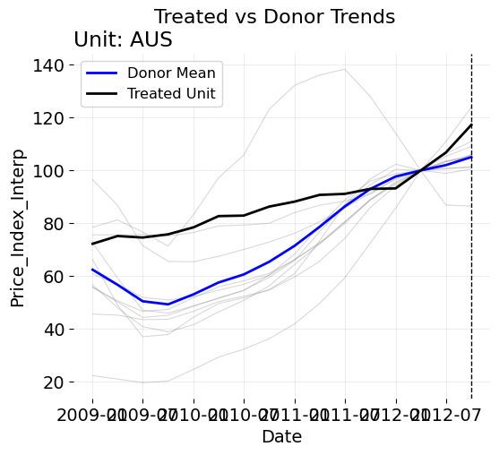

import numpy as np
import matplotlib.pyplot as plt
# Define vectors
y = np.array([50, 60])
y1 = np.array([20, 22])
y2 = np.array([48, 50])
# Time index (0 and 1)
t = np.arange(len(y))
# Plot
plt.figure(figsize=(8,5))
plt.plot(t, y, 'r-o', label=r'$\mathbf{y}$', linewidth=2)
plt.plot(t, y1, 'b-o', label=r'$\mathbf{y}_1$', linewidth=2)
plt.plot(t, y2, 'g-o', label=r'$\mathbf{y}_2$', linewidth=2)
plt.xlabel('Time')
plt.ylabel('Value')
plt.title('Time Series Plot')
plt.legend()
plt.grid(True)
plt.show()Lessons from Econometrics, Part 1: Synthetic Controls Aren’t Black Boxes
Introduction
What is an applied econometrician or data scientist? At its simplest, both are practitioners of statistics who apply econometric or statistical theory to answer questions that economists, businesses, or other organizations care about. Unless your role is narrowly defined as “standard” analytics (mostly SQL and dashboards, as far as I understand), this is true whether you work in causal inference, deep learning, computer vision, or some other branch of the field. We often talk about “delivering value” or “providing insights.” Some folks claim that deep business experience (which can be learned like other mindsets) matters more than technical knowledge, and that some data science teams “fail due to being too scientific”. But pause for a moment — look out your window. Do you see insights, or “business sense” floating around? Of course not. Insights do not exist in nature; they’re created. They are derived through data analysis. Business sense does not exist in a vacuum, it is informed by empirical observations about the real world. And what makes that analysis scientific, and business sense sensbile (not just guessing with sexed up software tools) is the theoretical source under which we arrive at these conclusions. Even if you’re not proving lemmas in your day job (I don’t), those underpinnings are exactly what allow us to trust our results. By extension, some authors describe synthetic controls as a black box function, suggesting that arcane operations under the hood spit out a result. And while that temptation is understandable, unless you’re dealing with truly complex models (like neural nets or GenAI, which themselves rest on explainable math foundations), the math behind vanilla SCM is well understood.
This matters even more because, as this Medium post observes, industry often values breadth and speed over theoretical depth. This is correct, but it risks overlooking how theory actually accelerates practical work. Theory for applied data scientists and econometricians (at least in the work I do) is a force multiplier. It allows you move quickly and diagnose problems/suggests improvements effectively. It makes applied work more accurate, more explainable, and more trustworthy. Treating SCM (or any model) as a black box might get you a nice graph, but what separates practitioners who are effective and practitioners who are less so is the understanding and application of theory to the business question at hand. After all, our estimates are not produced for nothing, they are meant to inform the policy/business outcomes we care about. Just because Nobody Dies If This Estimate Is Wrong is not a very comforting principle to base our analyses on.
In this blog post, first, I’ll compute a synthetic control by hand (how often do we do such a thing?) using calculus, KKT optimality conditions, and geometry. Then, I’ll walk through a recent real-world application, showing how theory very easily informs the way we run our models and understand our results.
A Simple Synthetic Control
We will compute the synthetic control weights by hand, and then show how we get the same solution in cvxpy. Suppose we have a treated unit and two donor units in 2D:
\[ \mathbf{y} = \begin{bmatrix} 50 \\ 60 \end{bmatrix}, \quad \mathbf{y}_1 = \begin{bmatrix} 20 \\ 22 \end{bmatrix}, \quad \mathbf{y}_2 = \begin{bmatrix} 48 \\ 50 \end{bmatrix} \]
Graphically this looks like
Calculus
Calculus is the heart of SCM, which is unsurprising given that it’s an optimization problem. However, after years of reading about SCM, I’ve never ever seen somebody solve a simple synthetic control by hand. I do this below. So, with the help of a little Boyd-ie, I went through the process of finding the weights by hand.
Solved By Calculus
We aim to find a synthetic control as a convex combination of the donors that matches the target vector as closely as possible:
\[ \begin{aligned} \mathbf{w}^{\ast} &= \underset{\mathbf w \in \mathbb{R}_{\ge 0}^2}{\operatorname*{argmin}} \;\; \|\mathbf y - \mathbf Y \mathbf w\|_2^2 \\ \text{s.t.} \quad & \mathbf 1^\top \mathbf w = 1, \end{aligned} \]
where \(\mathbf{Y} = \begin{bmatrix} \mathbf{y}_1 & \mathbf{y}_2 \end{bmatrix} = \begin{bmatrix} 20 & 48 \\ 22 & 50 \end{bmatrix}\).
The synthetic control is a weighted average:
\[ \hat{\mathbf{y}} = w_1 \mathbf{y}_1 + w_2 \mathbf{y}_2, \quad w_1, w_2 \geq 0, \quad w_1 + w_2 = 1. \]
of control units. Specifically, it is a convex combination. A convex combination of a set of vectors \(\mathbf{w}_1, \mathbf{w}_2, \dots, \mathbf{w}_n \in \mathbb{R}^N\) is any vector of the form
\[ \mathbf{w} = \sum_{i=1}^n \alpha_i \mathbf{w}_i \quad \text{subject to} \quad \alpha_i \ge 0 \text{ for all } i = 1, \dots, n, \quad \sum_{i=1}^n \alpha_i = 1. \]
Notice how in this case two donor units. From the definition above, it helps us to define one weight in terms of the other; for example, if the optimal value for one weight is 0.2, the other one must be 0.8.
Substituting \(w_2 = 1 - w_1\):
\[ \hat{\mathbf{y}}(w_1) = w_1 \mathbf{y}_1 + (1 - w_1)\mathbf{y}_2 = \mathbf{y}_2 + w_1(\mathbf{y}_1 - \mathbf{y}_2), \]
and since \(\mathbf{y}_1 - \mathbf{y}_2 = \begin{bmatrix}-28 \\ -28\end{bmatrix}\), we have
\[ \hat{\mathbf{y}}(w_1) = \begin{bmatrix} 48 \\ 50 \end{bmatrix} + w_1 \begin{bmatrix}-28 \\ -28\end{bmatrix} = \begin{bmatrix} 48 - 28 w_1 \\ 50 - 28 w_1 \end{bmatrix}. \]
This is just the predicted outcome if we put weight \(w_1\) on donor 1 and weight \(1-w_1\) on donor 2 (again, defining weight 1 in terms of weight 2). By definition, the residuals are the differences between the treated outcomes and the synthetic prediction:
\[ \mathbf{r}(w_1) = \mathbf{y} - \hat{\mathbf{y}}(w_1). \]
Plugging in:
\[ \mathbf{r}(w_1) = \begin{bmatrix} 50 \\ 60 \end{bmatrix} - \begin{bmatrix} 48 - 28 w_1 \\ 50 - 28 w_1 \end{bmatrix}. \]
So:
\[ \mathbf{r}(w_1) = \begin{bmatrix} 2 + 28w_1 \\ 10 + 28w_1 \end{bmatrix}. \]
Let’s define the main calculus rules we’ll use:
Constant Multiple Rule. If \(f(x) = c \cdot g(x)\), where \(c\) is a constant and \(g(x)\) is differentiable, then the derivative of \(f\) with respect to \(x\) is:
\[ f'(x) = c \cdot g'(x). \]
This rule allows you to pull constants out of derivatives.
Sum Rule. If \(f(x) = g(x) + h(x)\), where \(g(x)\) and \(h(x)\) are differentiable functions, then the derivative of \(f\) with respect to \(x\) is the sum of the derivatives of the individual functions:
\[ f'(x) = g'(x) + h'(x). \]
This rule allows us to differentiate each term of a sum separately and then add the results.
Chain Rule. If a function is composed as \(f(x) = g(h(x))\), where \(h(x)\) is the inner function and \(g(u)\) is the outer function (with \(u = h(x)\)), then the derivative of \(f(x)\) with respect to \(x\) is:
\[ f'(x) = g'(h(x)) \cdot h'(x). \]
Differentiate the outer function with respect to the inner function, then multiply by the derivative of the inner function with respect to \(x\).
To find the minimizing weight, we differentiate \(f(w_1)\) with respect to \(w_1\).
Since \(f(w_1)\) is a sum of two terms, the linearity of the derivative (sum rule) allows us to differentiate each term separately and then sum the results:
\[ f(w_1) = (2 + 28 w_1)^2 + (10 + 28 w_1)^2 \]
To find the minimizing weight, we differentiate \(f(w_1)\) with respect to \(w_1\). Since \(f(w_1)\) is a sum of two terms, we can differentiate each term separately and then sum the results, according to the linearity of the derivative.
Let’s begin with the first term: \((2 + 28 w_1)^2\). We recognize this as a composition of two functions, so we apply the chain rule. Let
\[ h_1(w_1) = 2 + 28 w_1 \quad \text{(inner function)}, \quad g_1(u) = u^2 \quad \text{(outer function)}. \]
Now we compute the derivatives:
\[ \frac{\mathrm{d} g_1}{\mathrm{d} u} = 2 u, \quad \frac{\mathrm{d} h_1}{\mathrm{d} w_1} = 28. \]
The first result comes from the power rule applied to the outer function, and the second comes from differentiating the linear inner function. Applying the chain rule, we obtain
\[ \frac{\mathrm{d}}{\mathrm{d} w_1} (2 + 28 w_1)^2 = \frac{\mathrm{d} g_1}{\mathrm{d} u} \bigg|_{u = h_1(w_1)} \cdot \frac{\mathrm{d} h_1}{\mathrm{d} w_1} = 2 (2 + 28 w_1) \cdot 28. \]
Next, consider the second term: \((10 + 28 w_1)^2\). Similarly, let
\[ h_2(w_1) = 10 + 28 w_1, \quad g_2(v) = v^2. \]
The derivatives are
\[ \frac{\mathrm{d} g_2}{\mathrm{d} v} = 2 v, \quad \frac{\mathrm{d} h_2}{\mathrm{d} w_1} = 28. \]
Again, these results come from the power rule for the quadratic outside function and the linear term inside the parentheses. By the chain rule, the derivative of the second term is
\[ \frac{\mathrm{d}}{\mathrm{d} w_1} (10 + 28 w_1)^2 = 2 (10 + 28 w_1) \cdot 28. \]
Combining the two terms by the sum rule, the derivative of the full objective function is
\[ \frac{\mathrm{d} f}{\mathrm{d} w_1} = 2 (2 + 28 w_1) \cdot 28 + 2 (10 + 28 w_1) \cdot 28. \]
Now we have our first order conditions. We start by setting the derivative to zero
\[ 2 (2 + 28 w_1) \cdot 28 + 2 (10 + 28 w_1) \cdot 28 = 0. \]
We can factor out \(2 \cdot 28\):
\[ 2 \cdot 28 \left[ (2 + 28 w_1) + (10 + 28 w_1) \right] = 0. \]
Simplifying inside the brackets gives
\[ (2 + 28 w_1) + (10 + 28 w_1) = 12 + 56 w_1, \]
so the equation becomes
\[ 2 \cdot 28 \cdot (12 + 56 w_1) = 0. \]
Since \(2 \cdot 28 \neq 0\), we can safely divide both sides of the equation by this constant factor 56, isolating the parentheses that contains our variable:
\[ 12 + 56 w_1 = 0. \]
We see that we can simplify this with the greatest common factor. Dividing both terms by 4 yields
\[ \frac{12}{4} + \frac{56}{4} w_1 = 0 \quad \implies \quad 3 + 14 w_1 = 0. \]
Finally, solving for \(w_1\), we obtain
\[ 14 w_1 = -3 \]
and finally
\[ w_1 = -\frac{3}{14}. \]
This is the unconstrained minimizer of \(f(w_1)\). However, it lies outside the feasible interval \([0,1]\) for the weights. The constrained minimum is therefore at the nearest boundary of the feasible set, which is \(w_1 = 0\). Correspondingly, \(w_2 = 1\). Evaluating the objective at the boundary points:
\[ f(0) = 2^2 + 10^2 = 104, \quad f(1) = 30^2 + 38^2 = 2344. \]
The minimum occurs at \(w_1 = 0, w_2 = 1\), giving the synthetic control
\[ \hat{\mathbf{y}} = \mathbf{y}_2 = \begin{bmatrix} 48 \\ 50 \end{bmatrix}. \]
The reason I chose a corner solution is because I wanted to think about the circumstnaces uner which the model will not work. Solving for the optimal and yet non-ideal answer provides interesting insights as to how we can think about applyinng SCM in practice, as I will show below.
KKT Derivation
The Karush-Kuhn-Tucker method formalizes what the calculus argument already suggested: because the unconstrained minimizer gives a negative weight, the constrained solution must sit on the boundary of the feasible set. KKT is useful here because it provides a systematic way to check all the optimality conditions at once—stationarity, feasibility, dual feasibility, and complementary slackness. This guarantees that the solution we find is not just locally valid but globally optimal for a convex quadratic problem. In this example, KKT confirms that the active constraint is \(w_1 \ge 0\), leading to the boundary solution \(w^\ast = (0,1)\).
Verified With KKT
To form the KKT system, introduce a scalar Lagrange multiplier \(\lambda\) for the equality constraint \(w_1 + w_2 = 1\) and nonnegative multipliers \(\mu_1, \mu_2 \ge 0\) for the inequality constraints \(w_1 \ge 0\), \(w_2 \ge 0\). The Lagrangian is
\[ \mathcal{L}(\mathbf{w}, \lambda, \mu) = \|\mathbf{y} - \mathbf{Y}\mathbf{w}\|_2^2 + \lambda (w_1 + w_2 - 1) - \mu_1 w_1 - \mu_2 w_2. \]
The negative sign in the terms \(-\mu_i w_i\) is a sign convention chosen so that the multipliers \(\mu_i\) are constrained to be nonnegative; this makes the statement of dual feasibility and complementary slackness straightforward. Stationarity means the gradient of the Lagrangian with respect to the primal variables vanishes. Differentiating the quadratic objective gives
\[ \nabla_{\mathbf{w}} \|\mathbf{y} - \mathbf{Y}\mathbf{w}\|_2^2 = 2 \mathbf{Y}^\top (\mathbf{Y}\mathbf{w} - \mathbf{y}), \]
so stationarity requires
\[ 2 \mathbf{Y}^\top (\mathbf{Y}\mathbf{w} - \mathbf{y}) + \lambda \mathbf{1} - \mu = \mathbf{0}, \]
where \(\mathbf{1} = (1,1)^\top\) and \(\mu = (\mu_1, \mu_2)^\top\). Primal feasibility is the requirement that the candidate weight vector satisfy the original constraints \(w_1 \ge 0\), \(w_2 \ge 0\), \(w_1 + w_2 = 1\). Dual feasibility means the multipliers associated with inequality constraints obey \(\mu_1 \ge 0\), \(\mu_2 \ge 0\). Complementary slackness ties the primal and dual together: for each inequality constraint, the product of the multiplier and the primal slack is zero, so \(\mu_i w_i = 0\) for \(i = 1, 2\). In words, complementary slackness says that if a constraint is active (the primal variable is on the boundary) its multiplier may be positive, and if the constraint is slack (strictly satisfied) the corresponding multiplier must be zero.
From calculus, we expect the constrained minimizer to be \(\mathbf{w}^{\ast} = (0,1)^\top\), which corresponds to taking donor two alone as the synthetic control. Verifying this candidate requires computing the residual at that point and solving the stationarity equations for the multipliers. At \(\mathbf{w}^{\ast}\) we have \(\mathbf{Y}\mathbf{w}^{\ast} = \mathbf{y}_2 = (48,50)^\top\) and the residual \(\mathbf{Y}\mathbf{w}^{\ast} - \mathbf{y} = (-2,-10)^\top\). Multiplying by \(2 \mathbf{Y}^\top\) yields
\[ 2 \mathbf{Y}^\top (\mathbf{Y}\mathbf{w}^{\ast} - \mathbf{y}) = 2 \begin{bmatrix}20 & 22 \\ 48 & 50\end{bmatrix} \begin{bmatrix}-2 \\ -10\end{bmatrix} = 2 \begin{bmatrix}-260 \\ -596\end{bmatrix} = \begin{bmatrix}-520 \\ -1192\end{bmatrix}. \]
Plugging this into the stationarity condition gives the two scalar equations
\[ -520 + \lambda - \mu_1 = 0, \qquad -1192 + \lambda - \mu_2 = 0. \]
Complementary slackness applied to the candidate \(w_1^{\ast} = 0, w_2^{\ast} = 1\) implies \(\mu_2 = 0\) because \(w_2^{\ast} > 0\) forces the corresponding multiplier to vanish, while \(\mu_1\) is unconstrained by slackness other than being nonnegative. Using \(\mu_2 = 0\) in the second scalar equation yields \(\lambda = 1192\). Substituting \(\lambda = 1192\) into the first equation gives \(\mu_1 = 672\), which satisfies dual feasibility since \(672 \ge 0\). Thus stationarity, primal feasibility, dual feasibility, and complementary slackness all hold for the candidate, and because the objective is convex (its Hessian is \(2 \mathbf{Y}^\top \mathbf{Y}\), which is positive semidefinite) these KKT conditions guarantee global optimality. Therefore \(\mathbf{w}^{\ast} = (0,1)^\top\) is the solution, the residual is \(\mathbf{y} - \hat{\mathbf{y}} = (2,10)^\top\), the Lagrange multiplier for the equality constraint is \(\lambda = 1192\), and the dual variables are \(\mu_1 = 672\), \(\mu_2 = 0\).To summarize in words: we formed the Lagrangian to incorporate constraints into the objective, set its gradient with respect to the primal variables to zero (stationarity), required the primal variables to satisfy the original constraints (primal feasibility), required inequality multipliers to be nonnegative (dual feasibility), and enforced that no multiplier is positive while its corresponding primal variable is strictly positive (complementary slackness). Solving these conditions gave the boundary solution \(w_1 = 0, w_2 = 1\), which is the projection of \(\mathbf{y}\) onto the convex hull of the donors when the unconstrained projection lies outside that hull. The KKT verification thus formalizes what we already knew: the now extreme your target unit is, the more your SCM will match to the nearest neighbor(s) in the donor pool.
Frank–Wolfe Geometric Solution and Hilbert Projection
For a final expression, we can also arrive at the solution via pure geometry.
Solved Via Frank-Wolfe
We seek to approximate
\[ \mathbf{y} = \begin{bmatrix}50\\60\end{bmatrix} \]
using a convex combination of donors
\[ \mathbf{y}_1 = \begin{bmatrix}20\\22\end{bmatrix}, \quad \mathbf{y}_2 = \begin{bmatrix}48\\50\end{bmatrix}. \]
The feasible set of synthetic predictions is the convex hull
\[ C = \operatorname{conv}\{\mathbf{y}_1, \mathbf{y}_2\}, \]
which is the line segment connecting the two donors. Minimizing the squared Euclidean distance
\[ f(\hat{\mathbf{y}}) = \|\mathbf{y} - \hat{\mathbf{y}}\|_2^2 \]
is equivalent to projecting \(\mathbf{y}\) onto this convex hull.
To give ourselves a frameowrk to work with we can employ the Hilbert Projection Theorem. This states that if \(C \subset \mathbb{R}^n\) is a nonempty, closed, convex set and \(\mathbf{y} \in \mathbb{R}^n\), then there exists a unique point \(\hat{\mathbf{y}} \in C\) such that
\[ \hat{\mathbf{y}} = \underset{\mathbf{z} \in C}{\operatorname{argmin}} \|\mathbf{y} - \mathbf{z}\|_2, \]
and the residual \(\mathbf{r} = \mathbf{y} - \hat{\mathbf{y}}\) satisfies the variational inequality
\[ \langle \mathbf{r}, \mathbf{z} - \hat{\mathbf{y}} \rangle \le 0 \quad \forall \mathbf{z} \in C. \]
This inequality expresses the geometric fact that the residual forms an obtuse or right angle with any vector pointing from the projection to a feasible point in \(C\); in other words, one cannot move from the projection along any direction in \(C\) and reduce the distance to \(\mathbf{y}\).
Applying this to our two-donor synthetic control problem, the convex hull is the line segment connecting \(\mathbf{y}_1\) and \(\mathbf{y}_2\), and the point \(\mathbf{y}\) lies outside this segment. Computing the Euclidean distances yields \(\|\mathbf{y} - \mathbf{y}_1\|^2 = 2344\) and \(\|\mathbf{y} - \mathbf{y}_2\|^2 = 104\), so the closest donor is \(\mathbf{y}_2\), which we take as the initial point \(x^{(0)}\) in a Frank–Wolfe iteration with corresponding weights \(w^{(0)} = (0,1)\). The gradient of the objective at \(x^{(0)}\) is \(\nabla f(x^{(0)}) = x^{(0)} - \mathbf{y} = \begin{bmatrix}-2\\-10\end{bmatrix}\). The Frank–Wolfe algorithm then searches for a vertex \(s \in \{\mathbf{y}_1, \mathbf{y}_2\}\) minimizing the inner product \(\langle \nabla f(x^{(0)}), s \rangle\). Computing \(\langle \nabla f(x^{(0)}), \mathbf{y}_1 \rangle = -260\) and \(\langle \nabla f(x^{(0)}), \mathbf{y}_2 \rangle = -596\) shows that the minimum occurs at \(\mathbf{y}_2\), meaning the search direction points toward the vertex we are already at. Attempting to move toward \(\mathbf{y}_1\) along the direction \(d = \mathbf{y}_1 - x^{(0)} = \begin{bmatrix}-28\\-28\end{bmatrix}\) gives an optimal unconstrained step
\[ \gamma^{\ast} = \frac{\langle \mathbf{y}-x^{(0)}, d \rangle}{\|d\|^2} = -0.214, \]
which lies outside the feasible range \([0,1]\). Clamping to \(\gamma = 0\) results in the update \(x^{(1)} = x^{(0)} = \mathbf{y}_2\), confirming that the closest feasible point is the boundary vertex \(\mathbf{y}_2\). The residual is therefore \(\mathbf{r} = \mathbf{y} - \hat{\mathbf{y}} = \begin{bmatrix}2\\10\end{bmatrix}\), which satisfies the Hilbert variational inequality because it forms an obtuse angle with the direction toward \(\mathbf{y}_1\).
This geometric reasoning mirrors the calculus derivation. In the unconstrained formulation, the minimizer of
\[ f(w_1) = \|\mathbf{y} - (w_1 \mathbf{y}_1 + (1-w_1) \mathbf{y}_2)\|^2 \]
occurs at \(w_1 = -3/14\), which is outside the feasible interval \([0,1]\). By the Hilbert Projection Theorem, the optimal feasible point must lie on the nearest boundary, which corresponds to \(w_1 = 0, w_2 = 1\). The gradient computation in calculus signals that the slope of the objective points toward the infeasible region, exactly reflecting the fact that the residual cannot be reduced by moving along the feasible set.
The KKT derivation provides an algebraic realization of the same geometric principle. The stationarity condition
\[ 2\mathbf{Y}^\top (\mathbf{Y}\mathbf{w}-\mathbf{y}) + \lambda \mathbf{1} - \mu = 0, \]
together with complementary slackness \(\mu_i w_i = 0\) and dual feasibility \(\mu_i \ge 0\), ensures that the residual \(\mathbf{r} = \mathbf{y} - \hat{\mathbf{y}}\) is orthogonal to any feasible direction in the convex hull, encoding precisely the variational inequality from the Hilbert Projection Theorem. Active inequality constraints correspond to nonzero multipliers, signaling that the projection lies on the boundary, while slack constraints have zero multipliers, corresponding to interior directions where the unconstrained minimum is feasible. In this example, the boundary solution \(w_1 = 0, w_2 = 1\) with residual \(\mathbf{r} = (2,10)^\top\) and Lagrange multipliers \(\lambda = 1192, \mu_1 = 672, \mu_2 = 0\) satisfies all KKT conditions and simultaneously fulfills the Hilbert projection criterion.
The Frank–Wolfe geometric approach, the calculus, and the KKT system are three perspectives on the same underlying fact: the optimal synthetic control for the standard method is the projection of \(\mathbf{y}\) onto the convex hull of donors. When the unconstrained minimizer lies outside the hull, the solution is constrained to the nearest boundary point, with the residual aligned according to the Hilbert Projection Theorem.
A Visuzalization in Python
Again, none of this is voodoo, just a lot of hairy math.
import numpy as np
import matplotlib.pyplot as plt
import cvxpy as cp
# =====================
# Step 0: Setup
# =====================
# Treated unit
x = np.array([50, 60])
# Donors
d1 = np.array([20, 22])
d2 = np.array([48, 50])
donors = np.vstack([d1, d2])
donors_cvx = np.column_stack([d1, d2])
n_donors = donors_cvx.shape[1]
w = cp.Variable(n_donors, nonneg=True)
objective = cp.Minimize(cp.sum_squares(x - donors_cvx @ w))
constraints = [cp.sum(w) == 1]
prob = cp.Problem(objective, constraints)
prob.solve()
x_hat_cvx = donors_cvx @ w.value
# Time steps
t = np.arange(len(x))
# =====================
# Plot as subfigures
# =====================
fig, axs = plt.subplots(1, 2, figsize=(12,5))
# --- Subplot 1: 2D feature plot ---
axs[0].plot(d1[0], d1[1], 'bo', label='Donor 1')
axs[0].plot(d2[0], d2[1], 'go', label='Donor 2')
axs[0].plot(x[0], x[1], 'r*', markersize=12, label='Treated Unit')
axs[0].plot(x_hat_cvx[0], x_hat_cvx[1], 'ms', markersize=10, label='Synthetic Control')
# Convex hull as a dashed line
axs[0].plot([d1[0], d2[0]], [d1[1], d2[1]], 'k-.', label='Convex Hull')
# Add literal rectangle around convex hull
x_min, x_max = np.min(donors[:,0]), np.max(donors[:,0])
y_min, y_max = np.min(donors[:,1]), np.max(donors[:,1])
rect = plt.Rectangle((x_min, y_min), x_max-x_min, y_max-y_min,
linewidth=1, edgecolor='gray', facecolor='none', linestyle='--', label='Hull Bounding Box')
axs[0].add_patch(rect)
axs[0].set_xlabel('Feature 1')
axs[0].set_ylabel('Feature 2')
axs[0].legend()
axs[0].grid(True)
axs[0].set_title('2D Feature Space')
# --- Subplot 2: Time series plot ---
axs[1].plot(t, x, 'r*-', label='Treated Unit', markersize=10)
axs[1].plot(t, d1, 'bo-', label='Donor 1')
axs[1].plot(t, d2, 'go-', label='Donor 2')
axs[1].plot(t, x_hat_cvx, 'ms-', label='Synthetic Control', markersize=8)
# Convex hull shading
donor_min = np.min(donors, axis=0)
donor_max = np.max(donors, axis=0)
axs[1].fill_between(t, donor_min, donor_max, color='gray', alpha=0.2, label='Donor Convex Hull')
axs[1].set_xlabel('Time')
axs[1].set_ylabel('Outcome')
axs[1].legend()
axs[1].grid(True)
axs[1].set_title('Time Series with Convex Hull Highlight')
plt.tight_layout()
plt.show()We can also show how the error changes, given a change in \(w_1\).
import numpy as np
import matplotlib.pyplot as plt
# Treated unit
y = np.array([50, 60])
# Donors
y1 = np.array([20, 22])
y2 = np.array([48, 50])
# Compute synthetic control at the constrained minimum (w1=0, w2=1)
w1_min = 0
w2_min = 1
y_hat_min = w1_min*y1 + w2_min*y2
# Compute residual
residual = y - y_hat_min
# Generate a range of w1 values for objective
w1_vals = np.linspace(0, 1, 200)
w2_vals = 1 - w1_vals
f_vals = np.array([np.sum((y - (w1*y1 + w2*y2))**2) for w1, w2 in zip(w1_vals, w2_vals)])
# Plot
fig, axs = plt.subplots(1, 2, figsize=(12,5))
# --- Subplot 1: 2D feature space with residual ---
axs[0].plot(y1[0], y1[1], 'bo', label='Donor 1')
axs[0].plot(y2[0], y2[1], 'go', label='Donor 2')
axs[0].plot(y[0], y[1], 'r*', markersize=12, label='Treated Unit')
axs[0].plot(y_hat_min[0], y_hat_min[1], 'ms', markersize=10, label='Synthetic Control')
# Convex hull line
axs[0].plot([y1[0], y2[0]], [y1[1], y2[1]], 'k-.', label='Convex Hull')
# Draw residual vector from synthetic control to treated unit
axs[0].arrow(y_hat_min[0], y_hat_min[1], residual[0], residual[1],
head_width=0.8, head_length=1.0, fc='orange', ec='orange', linewidth=2, label='Residual')
axs[0].set_xlabel('Feature 1')
axs[0].set_ylabel('Feature 2')
axs[0].legend()
axs[0].grid(True)
axs[0].set_title('2D Feature Space with Residual')
# --- Subplot 2: Objective function f(w1) ---
axs[1].plot(w1_vals, f_vals, 'b-', label=r'$f(w_1) = ||y - \hat{y}||^2$')
axs[1].plot(w1_min, f_vals[0], 'ro', label='Minimum (constrained)')
axs[1].axvline(x=w1_min, color='r', linestyle='--')
axs[1].set_xlabel(r'$w_1$')
axs[1].set_ylabel('Objective value')
axs[1].legend()
axs[1].grid(True)
axs[1].set_title('Objective Function vs. $w_1$')
plt.tight_layout()
plt.show()From this figure, we see what we already solved for. Any weight for \(w_1\) greater than 0 increases our error solution for our objective function.
Already, some of you who got this far will be asking “Jared, why did you go through the trouble of showing us all this? Who cares about the KKT conditions or the Hilbert Space Projection or any of those ideas? I’ll never literally do this at work will I, so why bother showing me any of this?” And my answer is “That is correct, you will not need to do any of this yourself, ever. However, the moment you intuit SCM in these terms, you can oftentimes get a good read as to how an analysis will look before you even run a single SCM model.” Not always, but sometimes. I have worked in industry as consultant for 5 months now, and literally, many problems that people have with the weights or the predictions etc. would literally (without exaggeration) be solved by simple line ploy. Seriously, you’ll discover a lot by just plotting your units out. We’re about to see why this is true in the content below.
Australia’s Carbon Tax
While scrolling through LinkedIn recently, I came across a seminar paper which studies the impact of Australia’s Carbon tax on prices of electricity. When I read SCM papers, the applied ones anyways, I immediately go to the figures to see how everything looks in terms of in sample fit and which donors were assigned non-negative weight (if they use such a formulation). On page 12, we see the Australia versus its synthetic control. My initial thought was “Hmmm, not bad! But… I see a little degradation of fit for 2009 (the beginning of the time series) to 2011” (a year-ish before the treatment happens). I wondered why this was, so I read on. The authors go on to note about their analysis:
However, caution is warranted due to the limited donor pool: the synthetic control consists almost entirely of Italy and Norway (81.5% and 18.49%), with other countries receiving negligible weights (<0.01%). This makes the estimates potentially sensitive to idiosyncratic shocks in those two countries.
I then thought to myself “Hmmm… 80 20 split out of 10 donors, and that slight imbalance… I wonder what the treated versus control units look like?” Fortunately, they answered this question on Appendix page 32 (I reproduce a version of the plot below, focusing on the in-sample period.)
import pandas as pd
import numpy as np
from mlsynth.utils.helperutils import sc_diagplot
from mlsynth import PDA, TSSC, FDID
url = "https://raw.githubusercontent.com/jgreathouse9/jgreathouse9.github.io/refs/heads/master/qdocs/Data/PPI%20Countries%20Normalized%20(2009).csv"
df = pd.read_csv(url)
# Remove quotes if any
df['Quarter'] = df['Quarter'].str.replace('"', '').str.strip()
# Replace space to match pandas expected format
df['Quarter'] = df['Quarter'].str.replace(' ', '')
# Convert to Period and then to timestamp
df['Date'] = pd.PeriodIndex(df['Quarter'], freq='Q').to_timestamp()
# Filter for Q1 2009 to Q4 2018
df = df[(df['Date'] >= '2009-01-01') & (df['Date'] <= '2018-12-31')]
# Keep relevant columns
df = df[['Date', 'Country', 'Price_Index_Interp']]
# Create treated dummy
df['treated'] = ((df['Country'] == 'AUS') & (df['Date'] > '2012-09-30')).astype(int)
# Sort by country and date
df = df.sort_values(by=['Country', 'Date']).reset_index(drop=True)
#df = df[df['Country'] != 'NOR'].copy()
config = {
"df": df,
"outcome": df.columns[2],
"treat": df.columns[-1],
"unitid": df.columns[1],
"time": df.columns[0],
"display_graphs": True,
"save": False,
"counterfactual_color": ["red"]}
df_in_sample = df.copy()
df_in_sample = df_in_sample[df_in_sample['Date'] <= '2012-12-01'] # keep only in-sample
config_in_sample = {
"df": df_in_sample,
"outcome": df_in_sample.columns[2],
"treat": df_in_sample.columns[-1],
"unitid": df_in_sample.columns[1],
"time": df_in_sample.columns[0],
"display_graphs": True,
"save": False,
"counterfactual_color": ["red"]
}
sc_diagplot([config_in_sample])
Geometrically, Australia effectively lies near the boundary of the convex hull spanned by the donor countries for much of the pre-treatment period. Think of the donor pool as forming a polygon in space. If Australia’s trajectory sits deep inside, SCM can mix donors smoothly. But if Australia hugs the edge, the projection is forced to land on just one or two vertices, no matter how much data you throw at it. Some of the donors intersect with Australia for the first two periods, but for all intents and purposes, for all quarters from 2009 to 2011, Australia is tracked by maybe 3 donors, and then only a little bit afterwards before the treatment began.
The authors noted they were worried about “idiosyncratic shocks in [Italy and Norway]”. While true, the deeper reason about WHY its true lies in the convex geometry we’ve derived above. As we have discussed, the SCM projection is constrained to the nearest vertices — Italy and Norway — producing a corner solution. Given that Australia is so close to the boundary of the convex hull for most of the in sample period, the SCM is forced to rely on what effectively are the closest few neighbors that minimize the MSE. The synthetic control is what it is because it’s the only donors the algorithm could possibly match on in the first place. The authors note elsewhere:
a problem arises when conducting the leave-one-out test (E1.2). Excluding Norway reduces the RMSPE ratio to 3.39; excluding Italy causes the ratio to fall to 0.8, effectively eliminating the observed effect. This underscores the importance of Italy as a core component of the synthetic control and implies that a causal interpretation relies on it being a valid counterfactual.
These results make sense. For the reasons we’ve discussed above, Italy in this instance NEEDS to be a donor that gets weight, otherwise the algorithm will only match on worse donors that are farther away from Australia’s target trajectory.
The Two-Step Synthetic Control
I thought to myself “Yeah this is definitely gonna need an intercept of some kind!!! Couldn’t fit the treated vector otherwise.” So, I ran the Two-Step SCM. The TSSC method was developed in part by one of my favorite econometricians, Kathy Li. The method is predicated on a simple idea: Sometimes treated units are simply too extreme relative to their donor pool, such as Australia. When this happens, vanilla SCM can struggle, and analysts may need to allow for intercepts or relax the non-negativity constraint. The challenge, however, is that it’s rarely obvious ex ante which modification is appropriate.
TSSC chooses between a few candidate estimators. First is MSCa: Intercept, Convex Hull
\[ \underset{\mathbf{w},\,\beta}{\text{argmin}} \;\; \| \mathbf{y}_1 - \mathbf{Y}\mathbf{w} - \beta \mathbf{1} \|_2^2 \quad \text{s.t.} \;\; \mathbf{w} \geq 0, \; \mathbf{1}^\top \mathbf{w} = 1, \; \beta \in \mathbb{R}. \]
This is SCM with an intercept, which shifts the treated unit vertically inside the convex hull. We also have MSCb: No Intercept, Nonnegative Weights
\[ \underset{\mathbf{w}}{\text{argmin}} \;\; \| \mathbf{y}_1 - \mathbf{Y}\mathbf{w} \|_2^2 \quad \text{s.t.} \;\; \mathbf{w} \geq 0. \]
This drops the intercept but allows weights to be any nonnegative values (not required to sum to one). Geometrically, the treated unit is projected onto the convex cone generated by the donors. Finally, we have MSCc: Intercept + Nonnegative Weights
\[ \underset{\mathbf{w},\,\beta}{\text{argmin}} \;\; \| \mathbf{y}_1 - \mathbf{Y}\mathbf{w} - \beta \mathbf{1} \|_2^2 \quad \text{s.t.} \;\; \mathbf{w} \geq 0. \]
This combines both relaxations: an intercept plus nonnegative weights. The treated unit is projected onto a shifted convex cone, which is especially useful when the treated unit differs systematically in slope or level from the donor pool.
TSSC begins by testing the joint null hypothesis that both restrictions are valid:
\[ H_0: \; \mathbf{1}^\top \mathbf{w} = 1 \quad \text{and} \quad \beta = 0 \]
against the alternative that at least one fails. If the null is rejected, each restriction is tested separately, yielding up to three possible modifications (MSCa, MSCb, or MSCc).
The test statistic compares the restricted SCM solution against the most flexible specification, MSCc. Let \((\hat{\mathbf{w}}^{SC}, \hat{\beta}^{SC})\) be the restricted solution and \((\hat{\mathbf{w}}^{MSCc}, \hat{\beta}^{MSCc})\) the flexible one. The statistic takes the form
\[ T = (\hat{\theta}^{SC} - \hat{\theta}^{MSCc})^\top \, \hat{\Sigma}^{-1} \, (\hat{\theta}^{SC} - \hat{\theta}^{MSCc}), \]
where \(\hat{\theta}\) stacks the estimated weights and intercept, and \(\hat{\Sigma}\) is a covariance estimate obtained by subsampling the pre-treatment period. Intuitively, \(T\) measures how far the SCM solution lies from the flexible cone-based solution, scaled by sampling variability. If \(T\) is small, the convex-hull assumption holds; if large, the data support a more flexible geometry.
Connecting the Theory to Practice
Geometrically, adding an intercept in TSSC shifts the treated vector vertically into the interior of the convex hull formed by the donor pool. In Hilbert space terms, this expands the feasible set for the projection: rather than projecting a point outside or on the boundary, the algorithm now projects a point inside the convex hull. This allows the synthetic control weights to spread across multiple donors rather than collapsing to a corner solution. From the KKT perspective, the intercept introduces an additional degree of freedom, modifying the constraints but still satisfying stationarity, dual feasibility, and complementary slackness on the adjusted feasible set. Consequently, TSSC can produce a solution where multiple donors receive meaningful weight, resolving the boundary limitations of standard SCM.
Results
Here is the result we get when we fit the TSSC estimator to the Australia case. As usual, to follow along you’ll need to do
pip install -U git+https://github.com/jgreathouse9/mlsynth.gitTSSC_res = TSSC(config).fit()import numpy as np
import pandas as pd
from IPython.display import display, Markdown
# SCM / TSSC results
results_df = pd.DataFrame({
"Method": ["SCM", "MSCc"],
"ATT": [31.049, -30.713],
"Intercept": [0.000, 62.872],
"Key Weights": [
"Italy: 0.815, Norway: 0.185",
"Norway: 0.089, South Africa: 0.288"
]
})
# Convert to Markdown table
md_table = results_df.to_markdown(index=False).split('\n')
# Adjust alignment: left for Method/Key Weights, center for numbers
md_table[1] = "|:------------|:------:|:--------:|:---------------------------|"
# Display nicely in notebook
display(Markdown('\n'.join(md_table)))| Method | ATT | Intercept | Key Weights |
|---|---|---|---|
| SCM | 31.049 | 0 | Italy: 0.815, Norway: 0.185 |
| MSCc | -30.713 | 62.872 | Norway: 0.089, South Africa: 0.288 |
The authors ATT is 31.049. The ATT of the MSCc is -30.713, almost the opposite of the original finding, with the intercept coefficient being 62.872 and the donors being Norway: 0.089, South Africa: 0.288. We can see here that by adding an intercept which accounts for systemic baseline differences between the target unit and the control group, we can sometimes even flip the sign of the estimated ATT completely. This demonstrates why theoretical understanding is crucial: by simple inspection of donor units versus the treated units, we can sometimes intuit how the baseline model will look before we’ve ran it, potentially anticipating the kind of SCM model we need. In this case just by looking, we already know that the donors will mainly be the nearest neighbors, suggesting that the model needs an intercept. Note that the sign reversal is not always true. Consider the Basque example:
import pandas as pd
from mlsynth import TSSC
url = "https://raw.githubusercontent.com/jgreathouse9/mlsynth/refs/heads/main/basedata/basque_data.csv"
data = pd.read_csv(url)
config = {
"df": data,
"outcome": data.columns[2],
"treat": data.columns[-1],
"unitid": data.columns[0],
"time": data.columns[1],
"display_graphs": True,
"save": False,
"counterfactual_color": ["red"]}
arco = TSSC(config).fit()Here our ATT is -0.8, whereas the original SCM’s was -0.69. With an intercept of 0.583, MSCc assigns weight to Cataluna: 0.533, Madrid (Comunidad De): 0.067, Principado De Asturias: 0.115, and Rioja (La): 0.289. In contrast, Cataluna’s weight at first was 0.826, Madrid’s was 0.168, and Austurias was 0.005 (these differ a little from the 2003 paper because I do not employ covariates).
Conclusion: Why SCM Theory Matters
By now, it should be clear why a solid grasp of underlying SCM theory is essential. SCM is not a black box. While there are interesting computational challenges associated with SCM, especially when we have covariates, the math of the standard form without covairates is actually pretty knowable. Idiots will tell you that the math behind the models is not essential to understand for machine-learning/real world business science, or that there are diminishing returns to scientific depth in data science, but this is ridiculous. Only by having a decent understanding of and confort with the internal logic of the models can you hope to use them effectively, and that understanding sometimes takes years of work. To use these models, yet not understand how they work, is the equivalent of having a Ferarri or Maybach but never having learned to drive.
In marketing or policy contexts, the stakes are tangible: overstating a 20% campaign lift may inflate budgets unnecessarily, while underestimating a dip could delay corrective action and cost market share. In incrementality testing for example, SCM informs marketing mix models, shapes campaigns, guides pricing strategies, and helps determine which channels truely affct KPIs in a causal manner. Understanding the convex hull structure, the behavior of boundary solutions, and how constraints interact via KKT conditions ensures that analysts interpret the results correctly. Ignoring these principles can lead to costly mistakes.
Poor donor pool selection, extreme treated units, or ignoring the need for adjustments like intercepts/other issues can lead top optimal solutions, but are poor for having a robust causal estimand, sometimes flipping the sign of estimated effects. For ad spending, this translates directly into misappropriating millions of dollars. Simple checks that do not involve mathematics, like plotting treated versus donor trajectories upfront, can reveal these vulnerabilities immediately. A theoretically informed scientist can diagnose these issues and apply remedies. SCMs are powerful, and have much potenital, but only if the practitioner understands when and why to apply them, and what to do when the standard toolkit produces needs to be adjusted.
By understanding the basic theory behind SCM, and how methods like TSSC and other recent advances expand the toolkit away from normal SCM or CausalImpact, teams can anticipate problems, interpret results correctly, and derive robust insights using modern methods equipped to address causal inference fro real problems. Theory, in addition to contextual experience, transforms SCM from a black-box solver into a reliable instrument for business and policy impact.
Shake it to the Max? Using the \(\ell_\infty\) norm for Synthetic Control Methods
Machine Learning
Econometrics
What Is An Average?
Econometric Theory
Statistics
Synthetic Controls for Marketing Experiments
Experiments
Econometrics
Forward Augmented Synthetic Controls
Causal Inference
Econometrics
What is a Synthetic Control?
Econometrics
Causal Inference
The Synthetic Historical Control Method
Econometrics
The Iterative Synthetic Control Method
Econometrics
Synthetic Controls With Non-Linear Outcome Trends: A Principled Approach to Extrapolation
Causal Inference
Econometrics
Synthetic Controls Do Not Care What Your Donors Are. So Why Do You?
Econometric Theory
Synthetic Control Methods for Personalized Causal Inference
Causal Inference
Econometrics
Synthetic Controls With More Than One Outcome
Causal Inference
Econometrics
Forward Selected Synthetic Control
Machine Learning
Econometrics
Data Science for Policy Analysts: A Simple Introduction to Web Scraping
Web Scraping
Python
No matching items